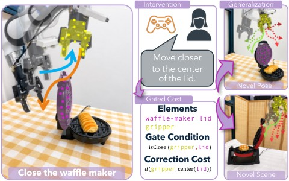

一次接管里有两种信息
机器人拿咖啡杯时出了问题，操作者可以把杯子摆正，也可以说明“让杯口保持朝上”。前者是一段动作，后者描述以后还应遵守的条件。OopsieRecover同时保存接管前、人工纠正和交还机器人的片段，并收集语言解释。已有动作模型不重新训练。对需要维护多个任务的团队，这种分离便于讨论究竟改了什么：一次移动是为了避开把手、保持姿态，还是单纯纠正了错误位置。解释本身也需要检查，含糊的一句话不能自动成为可靠的控制规则。
OopsieRecover · 论文／研究原型

机器人拿咖啡杯时出了问题，操作者可以把杯子摆正，也可以说明“让杯口保持朝上”。前者是一段动作，后者描述以后还应遵守的条件。OopsieRecover同时保存接管前、人工纠正和交还机器人的片段，并收集语言解释。已有动作模型不重新训练。对需要维护多个任务的团队，这种分离便于讨论究竟改了什么：一次移动是为了避开把手、保持姿态，还是单纯纠正了错误位置。解释本身也需要检查，含糊的一句话不能自动成为可靠的控制规则。
系统用视觉语言模型把机器人部位、物体或区域对应到三维点集，再从轨迹形成何时启用的条件、纠错代价和任务进度代价。候选规则会回到已有干预片段检查，运行时对基础策略提出的动作进行评分。产品上可把这理解为一条附有适用条件的局部修正，而不是让一句反馈重写全部行为。操作者需要看见规则在哪些场景生效，避免一次有用的修正长期影响无关任务。如果所有候选动作都不合适，重新排序并不会凭空产生一个正确动作。
论文在仿真和真实机器人上都做了测试，真实任务包括放置食物、装咖啡胶囊和把物品放上架子，每任务使用三至六次带解释的干预。作者项目页汇总的任务进度由百分之三十五升至百分之六十一，度量是完成任务阶段的比例，不是整条任务的成功率。这个区别会影响部署判断：完成更多中间步骤仍可能留下最后一步失败。团队在比较人工接管负担时，应把阶段进度与整次完成分开看，也保留失败发生的位置，才能知道修正是否只是把错误推迟。
这里主要表达物体之间的空间关系，未测得的材质、接触力和隐藏状态并不会因为有语言解释就变得可用。点集定位或动作预测错误，也会使正确的意图得到错误的评分。它提供的是一种研究中的纠错组织方式，尚不能说明任意家庭机器人都能通过几次示范学会可靠恢复。比起保存一段孤立演示，把失败情境、人工理由和修复后的表现连起来更便于维护；规则版本与适用环境也应一起保留，否则日后很难判断一条旧修正为什么又被调用。